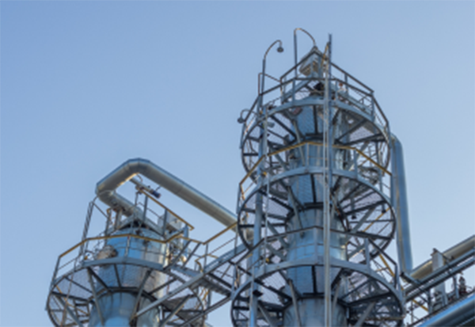

Цель
Расширение марочного ассортимента продуктовыми решениями, обеспечивающими повышение эффективности для потребителей.
Разработка и внедрение новых продуктов и клиентских решений в рамках развития продуктового портфеля
компании в области каучуков и термоэластопластов, научно-техническая поддержка производства
«Воронежсинтезкаучука» по выпуску новых и текущих продуктов, взаимодействие с клиентами по
использованию и внедрению продуктов компании.

Основные направления деятельности
1
Развитие марочного ассортимента (разработка новых марок с улучшенными эксплуатационными характеристиками).
2
Оптимизация технологических процессов.
3
Новые продукты и технологии (форсайт-разработки инновационных идей).
4
Сертификация новых продуктов и материалов (аттестация и тестирование сырья, расширение пула поставщиков).